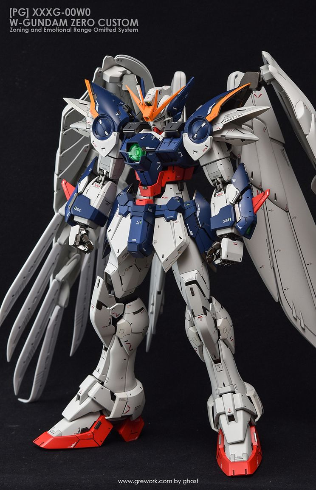

Perfect Grade (PG) or 1:60 scale gunpla kits were a line of kits that were inspired by another model kit line called Evangelion in 1997. The kit line was transfered to the Gundam franchise and has been exclusive to gunpla until 2017. These kits emphasize details and gimmicks and make the kit truly feel like a mechanical fighting robot. They contain several more points in articulation compared to their HG, RG and MG counterparts. Also being the first kits with strong, articulate fingers that move at the knuckles.
PG 00 7Sword: Much larger than an MG or HG. 00 7Sword does not struggle holding his giant weapons compared to his 1:100 variant.

PG Wing Zero Custom Mode: The perfect version of Wign Zero. It's wings truly stand out and feel majestic in this 1:60 kit.
PG Strike:A common looking kit, made into its most detailed and articulated form.
The gunpla community has mostly seen positive reviews from PG kits. Though some may not be as "flashy" or as massively detailed, all PG kits have had solid builds, dynamic posing, and are much less fragile due to their far superior plastic material and metal parts. PG kits can cost from $150-$300 dollars, at least triple the price of a MG kit. A PG kit usually comes out once every 2-3 years, this is because Bandai Gunpla Designers need time to make these intricate spectacular kits. We will see a PG once every 2-3 years, while we will get around 5 MG kits per year, and at least 10 HG/RG kits per year.